Non-right Triangles: Law of Sines
To ensure the safety of over 5,000 U.S. aircraft flying simultaneously during peak times, air traffic controllers monitor and communicate with them after receiving data from the robust radar beacon system. Suppose two radar stations located 20 miles apart each detect an aircraft between them. The angle of elevation measured by the first station is 35 degrees, whereas the angle of elevation measured by the second station is 15 degrees. How can we determine the altitude of the aircraft? We see in Figure 1 that the triangle formed by the aircraft and the two stations is not a right triangle, so we cannot use what we know about right triangles. In this section, we will find out how to solve problems involving non-right triangles.

Using the Law of Sines to Solve Oblique Triangles
In any triangle, we can draw an altitude, a perpendicular line from one vertex to the opposite side, forming two right triangles. It would be preferable, however, to have methods that we can apply directly to non-right triangles without first having to create right triangles.
Any triangle that is not a right triangle is an oblique triangle. Solving an oblique triangle means finding the measurements of all three angles and all three sides. To do so, we need to start with at least three of these values, including at least one of the sides. We will investigate three possible oblique triangle problem situations:
- ASA (angle-side-angle) We know the measurements of two angles and the included side. See Figure 2.
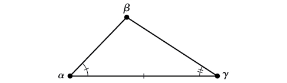
Figure 2 - AAS (angle-angle-side) We know the measurements of two angles and a side that is not between the known angles. See Figure 3.
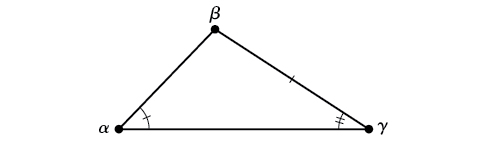
Figure 3 - SSA (side-side-angle) We know the measurements of two sides and an angle that is not between the known sides. See Figure 4.
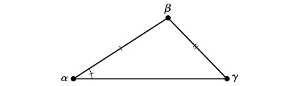
Figure 4
Knowing how to approach each of these situations enables us to solve oblique triangles without having to drop a perpendicular to form two right triangles. Instead, we can use the fact that the ratio of the measurement of one of the angles to the length of its opposite side will be equal to the other two ratios of angle measure to opposite side. Let’s see how this statement is derived by considering the triangle shown in Figure 5.
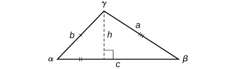
Using the right triangle relationships, we know that and Solving both equations for gives two different expressions for
We then set the expressions equal to each other.
Similarly, we can compare the other ratios.
Collectively, these relationships are called the Law of Sines.
Note the standard way of labeling triangles: angle (alpha) is opposite side angle (beta) is opposite side and angle (gamma) is opposite side See Figure 6.
While calculating angles and sides, be sure to carry the exact values through to the final answer. Generally, final answers are rounded to the nearest tenth, unless otherwise specified.
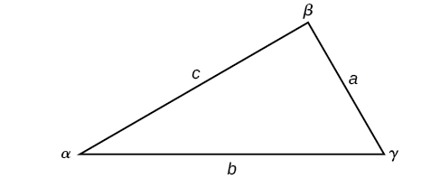
Solving for Two Unknown Sides and Angle of an AAS Triangle
Solve the triangle shown in Figure 7 to the nearest tenth.
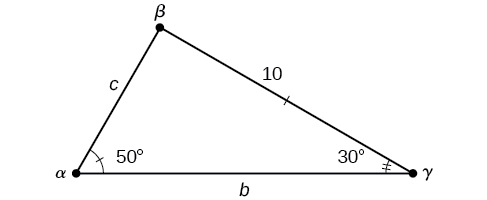
Solution
The three angles must add up to 180 degrees. From this, we can determine that
To find an unknown side, we need to know the corresponding angle and a known ratio. We know that angle and its corresponding side We can use the following proportion from the Law of Sines to find the length of
Similarly, to solve for we set up another proportion.
Therefore, the complete set of angles and sides is
Using The Law of Sines to Solve SSA Triangles
We can use the Law of Sines to solve any oblique triangle, but some solutions may not be straightforward. In some cases, more than one triangle may satisfy the given criteria, which we describe as an ambiguous case. Triangles classified as SSA, those in which we know the lengths of two sides and the measurement of the angle opposite one of the given sides, may result in one or two solutions, or even no solution.
Solving an Oblique SSA Triangle
Solve the triangle in Figure 10 for the missing side and find the missing angle measures to the nearest tenth.
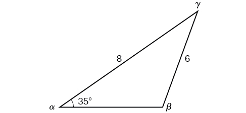
Solution
Use the Law of Sines to find angle and angle and then side Solving for we have the proportion
However, in the diagram, angle appears to be an obtuse angle and may be greater than 90°. How did we get an acute angle, and how do we find the measurement of Let’s investigate further. Dropping a perpendicular from and viewing the triangle from a right angle perspective, we have Figure 11. It appears that there may be a second triangle that will fit the given criteria.
![An oblique triangle built from the previous with standard prime labels. Side a is of length 6, side b is of length 8, and angle alpha prime is 35 degrees. An isosceles triangle is attached, using side a as one of its congruent legs and the angle supplementary to angle beta as one of its congruent base angles. The other congruent angle is called beta prime, and the entire new horizontal base, which extends from the original side c, is called c prime. There is a dotted altitude line from angle gamma prime to side c prime.](../../media/CNX_Precalc_Figure_08_01_011.jpg)
The angle supplementary to is approximately equal to 49.9°, which means that (Remember that the sine function is positive in both the first and second quadrants.) Solving for we have
We can then use these measurements to solve the other triangle. Since is supplementary to the sum of and we have
Now we need to find and
We have
Finally,
To summarize, there are two triangles with an angle of 35°, an adjacent side of 8, and an opposite side of 6, as shown in Figure 12.

However, we were looking for the values for the triangle with an obtuse angle We can see them in the first triangle (a) in Figure 12.
Solving for the Unknown Sides and Angles of a SSA Triangle
In the triangle shown in Figure 13, solve for the unknown side and angles. Round your answers to the nearest tenth.
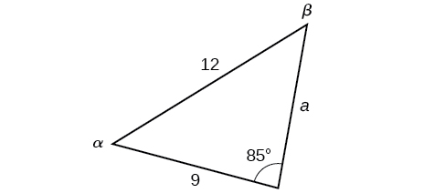
Solution
In choosing the pair of ratios from the Law of Sines to use, look at the information given. In this case, we know the angle and its corresponding side and we know side We will use this proportion to solve for
To find apply the inverse sine function. The inverse sine will produce a single result, but keep in mind that there may be two values for It is important to verify the result, as there may be two viable solutions, only one solution (the usual case), or no solutions.
In this case, if we subtract from 180°, we find that there may be a second possible solution. Thus, To check the solution, subtract both angles, 131.7° and 85°, from 180°. This gives
which is impossible, and so
To find the remaining missing values, we calculate Now, only side is needed. Use the Law of Sines to solve for by one of the proportions.
The complete set of solutions for the given triangle is
Finding the Triangles That Meet the Given Criteria
Find all possible triangles if one side has length 4 opposite an angle of 50°, and a second side has length 10.
Solution
Using the given information, we can solve for the angle opposite the side of length 10. See Figure 14.
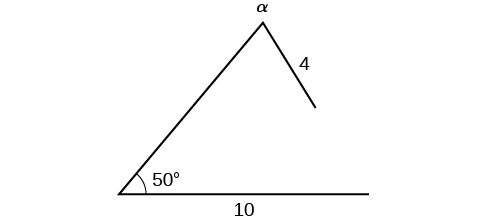
We can stop here without finding the value of Because the range of the sine function is it is impossible for the sine value to be 1.915. In fact, inputting in a graphing calculator generates an ERROR DOMAIN. Therefore, no triangles can be drawn with the provided dimensions.
Finding the Area of an Oblique Triangle Using the Sine Function
Now that we can solve a triangle for missing values, we can use some of those values and the sine function to find the area of an oblique triangle. Recall that the area formula for a triangle is given as where is base and is height. For oblique triangles, we must find before we can use the area formula. Observing the two triangles in Figure 15, one acute and one obtuse, we can drop a perpendicular to represent the height and then apply the trigonometric property to write an equation for area in oblique triangles. In the acute triangle, we have or However, in the obtuse triangle, we drop the perpendicular outside the triangle and extend the base to form a right triangle. The angle used in calculation is or
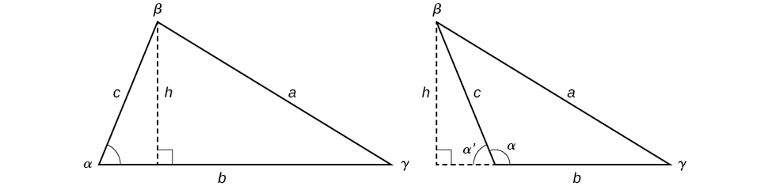
Thus,
Similarly,
Finding the Area of an Oblique Triangle
Find the area of a triangle with sides and angle Round the area to the nearest integer.
Solution
Using the formula, we have
Solving Applied Problems Using the Law of Sines
The more we study trigonometric applications, the more we discover that the applications are countless. Some are flat, diagram-type situations, but many applications in calculus, engineering, and physics involve three dimensions and motion.
Finding an Altitude
Find the altitude of the aircraft in the problem introduced at the beginning of this section, shown in Figure 16. Round the altitude to the nearest tenth of a mile.

Solution
To find the elevation of the aircraft, we first find the distance from one station to the aircraft, such as the side and then use right triangle relationships to find the height of the aircraft,
Because the angles in the triangle add up to 180 degrees, the unknown angle must be 180°−15°−35°=130°. This angle is opposite the side of length 20, allowing us to set up a Law of Sines relationship.
The distance from one station to the aircraft is about 14.98 miles.
Now that we know we can use right triangle relationships to solve for
The aircraft is at an altitude of approximately 3.9 miles.
Key Equations
| Law of Sines | |
| Area for oblique triangles |
Key Concepts
- The Law of Sines can be used to solve oblique triangles, which are non-right triangles.
- According to the Law of Sines, the ratio of the measurement of one of the angles to the length of its opposite side equals the other two ratios of angle measure to opposite side.
- There are three possible cases: ASA, AAS, SSA. Depending on the information given, we can choose the appropriate equation to find the requested solution. See Example 1.
- The ambiguous case arises when an oblique triangle can have different outcomes.
- There are three possible cases that arise from SSA arrangement—a single solution, two possible solutions, and no solution. See Example 2 and Example 3.
- The Law of Sines can be used to solve triangles with given criteria. See Example 4.
- The general area formula for triangles translates to oblique triangles by first finding the appropriate height value. See Example 5.
- There are many trigonometric applications. They can often be solved by first drawing a diagram of the given information and then using the appropriate equation. See Example 6.
Section Exercises
Verbal
Describe the altitude of a triangle.
Solution
The altitude extends from any vertex to the opposite side or to the line containing the opposite side at a 90° angle.
Compare right triangles and oblique triangles.
When can you use the Law of Sines to find a missing angle?
Solution
When the known values are the side opposite the missing angle and another side and its opposite angle.
In the Law of Sines, what is the relationship between the angle in the numerator and the side in the denominator?
What type of triangle results in an ambiguous case?
Solution
A triangle with two given sides and a non-included angle.
Algebraic
For the following exercises, assume is opposite side is opposite side and is opposite side Solve each triangle, if possible. Round each answer to the nearest tenth.
Solution
Solution
For the following exercises, use the Law of Sines to solve for the missing side for each oblique triangle. Round each answer to the nearest hundredth. Assume that angle is opposite side angle is opposite side and angle is opposite side
Find side when
Solution
Find side when
Find side when
Solution
For the following exercises, assume is opposite side is opposite side and is opposite side Determine whether there is no triangle, one triangle, or two triangles. Then solve each triangle, if possible. Round each answer to the nearest tenth.
Solution
one triangle,
Solution
two triangles, or
Solution
two triangles, or
Solution
two triangles, or
Solution
no triangle possible
For the following exercises, use the Law of Sines to solve, if possible, the missing side or angle for each triangle or triangles in the ambiguous case. Round each answer to the nearest tenth.
Find angle when
Find angle when
Solution
or
Find angle when
For the following exercises, find the area of the triangle with the given measurements. Round each answer to the nearest tenth.
Solution
Solution
Graphical
For the following exercises, find the length of side Round to the nearest tenth.
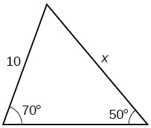
Solution
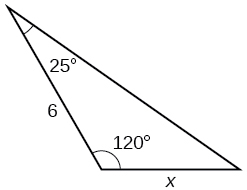
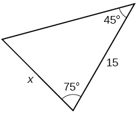
Solution
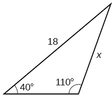
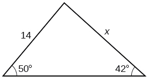
Solution
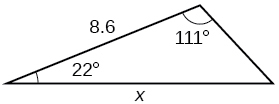
For the following exercises, find the measure of angle if possible. Round to the nearest tenth.
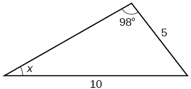
Solution
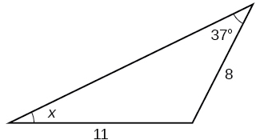
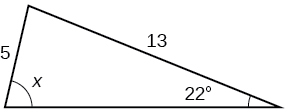
Solution
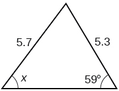
Notice that is an obtuse angle.
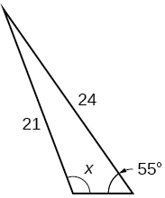
Solution
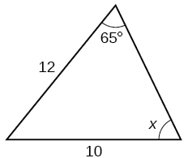
For the following exercise, solve the triangle. Round each answer to the nearest tenth.
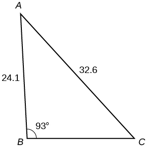
Solution
For the following exercises, find the area of each triangle. Round each answer to the nearest tenth.
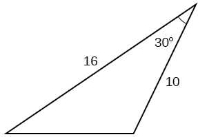
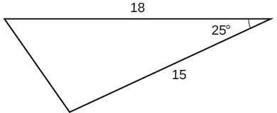
Solution
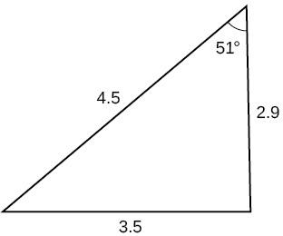
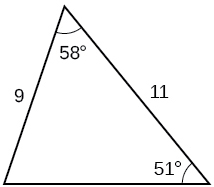
Solution
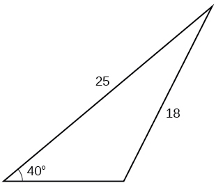
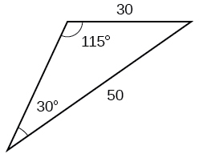
Solution
Extensions
Find the radius of the circle in Figure 18. Round to the nearest tenth.
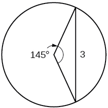
Find the diameter of the circle in Figure 19. Round to the nearest tenth.
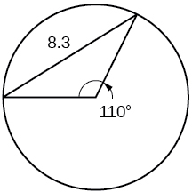
Solution
Find in Figure 20. Round to the nearest tenth.
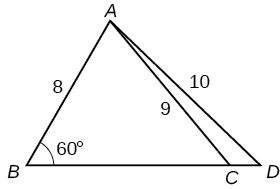
Find in Figure 21. Round to the nearest tenth.
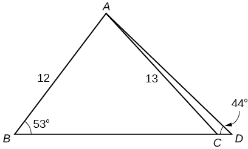
Solution
Solve both triangles in Figure 22. Round each answer to the nearest tenth.
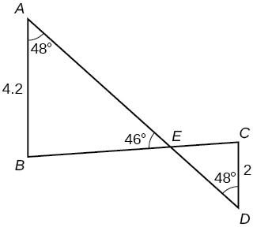
Find in the parallelogram shown in Figure 23.
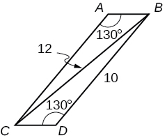
Solution
Solve the triangle in Figure 24. (Hint: Draw a perpendicular from to Round each answer to the nearest tenth.
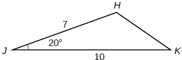
Solve the triangle in Figure 25. (Hint: Draw a perpendicular from to Round each answer to the nearest tenth.
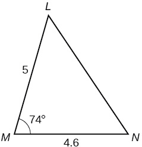
Solution
In Figure 26, is not a parallelogram. is obtuse. Solve both triangles. Round each answer to the nearest tenth.
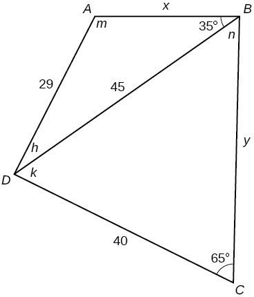
Real-World Applications
A pole leans away from the sun at an angle of to the vertical, as shown in Figure 27. When the elevation of the sun is the pole casts a shadow 42 feet long on the level ground. How long is the pole? Round the answer to the nearest tenth.
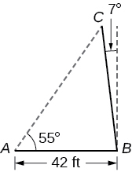
Solution
51.4 feet
To determine how far a boat is from shore, two radar stations 500 feet apart find the angles out to the boat, as shown in Figure 28. Determine the distance of the boat from station and the distance of the boat from shore. Round your answers to the nearest whole foot.
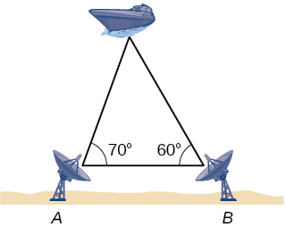
Figure 29 shows a satellite orbiting Earth. The satellite passes directly over two tracking stations and which are 69 miles apart. When the satellite is on one side of the two stations, the angles of elevation at and are measured to be and respectively. How far is the satellite from station and how high is the satellite above the ground? Round answers to the nearest whole mile.
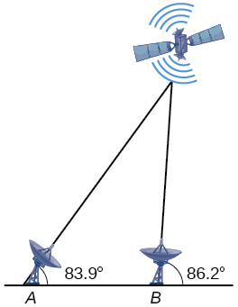
Solution
The distance from the satellite to station is approximately 1716 miles. The satellite is approximately 1706 miles above the ground.
A communications tower is located at the top of a steep hill, as shown in Figure 30. The angle of inclination of the hill is A guy wire is to be attached to the top of the tower and to the ground, 165 meters downhill from the base of the tower. The angle formed by the guy wire and the hill is Find the length of the cable required for the guy wire to the nearest whole meter.

The roof of a house is at a angle. An 8-foot solar panel is to be mounted on the roof and should be angled relative to the horizontal for optimal results. (See Figure 31). How long does the vertical support holding up the back of the panel need to be? Round to the nearest tenth.
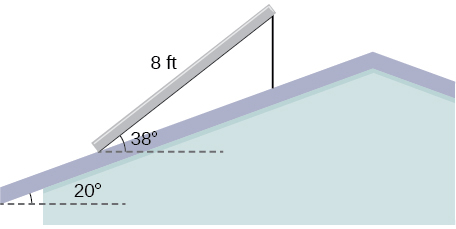
Solution
2.6 ft
Similar to an angle of elevation, an angle of depression is the acute angle formed by a horizontal line and an observer’s line of sight to an object below the horizontal. A pilot is flying over a straight highway. He determines the angles of depression to two mileposts, 6.6 km apart, to be and as shown in Figure 32. Find the distance of the plane from point to the nearest tenth of a kilometer.
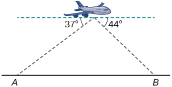
A pilot is flying over a straight highway. He determines the angles of depression to two mileposts, 4.3 km apart, to be 32° and 56°, as shown in Figure 33. Find the distance of the plane from point to the nearest tenth of a kilometer.

Solution
5.6 km
In order to estimate the height of a building, two students stand at a certain distance from the building at street level. From this point, they find the angle of elevation from the street to the top of the building to be 39°. They then move 300 feet closer to the building and find the angle of elevation to be 50°. Assuming that the street is level, estimate the height of the building to the nearest foot.
In order to estimate the height of a building, two students stand at a certain distance from the building at street level. From this point, they find the angle of elevation from the street to the top of the building to be 35°. They then move 250 feet closer to the building and find the angle of elevation to be 53°. Assuming that the street is level, estimate the height of the building to the nearest foot.
Solution
371 ft
Points and are on opposite sides of a lake. Point is 97 meters from The measure of angle is determined to be 101°, and the measure of angle is determined to be 53°. What is the distance from to rounded to the nearest whole meter?
A man and a woman standing miles apart spot a hot air balloon at the same time. If the angle of elevation from the man to the balloon is 27°, and the angle of elevation from the woman to the balloon is 41°, find the altitude of the balloon to the nearest foot.
Solution
5936 ft
Two search teams spot a stranded climber on a mountain. The first search team is 0.5 miles from the second search team, and both teams are at an altitude of 1 mile. The angle of elevation from the first search team to the stranded climber is 15°. The angle of elevation from the second search team to the climber is 22°. What is the altitude of the climber? Round to the nearest tenth of a mile.
A street light is mounted on a pole. A 6-foot-tall man is standing on the street a short distance from the pole, casting a shadow. The angle of elevation from the tip of the man’s shadow to the top of his head of 28°. A 6-foot-tall woman is standing on the same street on the opposite side of the pole from the man. The angle of elevation from the tip of her shadow to the top of her head is 28°. If the man and woman are 20 feet apart, how far is the street light from the tip of the shadow of each person? Round the distance to the nearest tenth of a foot.
Solution
24.1 ft
Three cities, and are located so that city is due east of city If city is located 35° west of north from city and is 100 miles from city and 70 miles from city how far is city from city Round the distance to the nearest tenth of a mile.
Two streets meet at an 80° angle. At the corner, a park is being built in the shape of a triangle. Find the area of the park if, along one road, the park measures 180 feet, and along the other road, the park measures 215 feet.
Solution
19,056 ft2
Brian’s house is on a corner lot. Find the area of the front yard if the edges measure 40 and 56 feet, as shown in Figure 34.
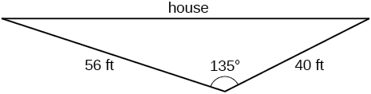
The Bermuda triangle is a region of the Atlantic Ocean that connects Bermuda, Florida, and Puerto Rico. Find the area of the Bermuda triangle if the distance from Florida to Bermuda is 1030 miles, the distance from Puerto Rico to Bermuda is 980 miles, and the angle created by the two distances is 62°.
Solution
445,624 square miles
A yield sign measures 30 inches on all three sides. What is the area of the sign?
Naomi bought a dining table whose top is in the shape of a triangle. Find the area of the table top if two of the sides measure 4 feet and 4.5 feet, and the smaller angles measure 32° and 42°, as shown in Figure 35.
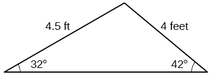
Solution
8.65 ft2